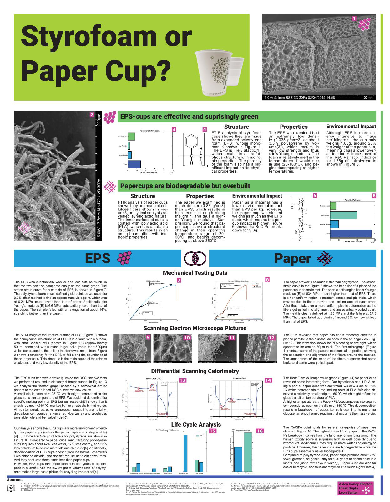

- February 2019
This project was originally inspired by the question of how bad styrofoam ramen cups are for the environment and us. However, it turned out to be quite difficult to buy any styrofoam ramen as most ramen are made of a similar but not identical polymer foam. Therefore, we decided to compare styrofoam cups against biodegradable paper cups. Which cup should you get? Styrofoam cups, actually! Generally speaking, styrofoam cups are better for the environment than paper cups. The lack of recycling facilities makes their impact on the environment (and therefore us) even worse.
Our poster will give you a very detailed analysis of polystyrene cups and biodegradable PLA-coated paper cups. Among other testing, we strain-stress tested the cups, looked at their structure under a scanning electron microscope (SEM), and calculated the ReCiPe Eco-Indicator effect for both kinds of cup. Please look a the poster for a detailed comparison of polystyrene cups and paper cups.
